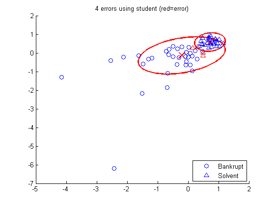

Fit a mixture of Gaussians and mixture of Students to some data
and use the resulting models to classify This example is based on fig 3.3 of Kenneth Lo's PhD thesis, "Statistical methods for high throughput genomics", UBC 2009
%PMTKauthor Hannes Bretschneider
function mixStudentBankruptcyDemo() setSeed(0); bank = loadData('bankruptcy'); Y = bank.data(:,1); % 0,1 X = bank.data(:,2:3); [N, D] = size(X); X = standardizeCols(X); K = 2; [model] = mixModelFit(X, K, 'student'); [zhat] = mixModelMapLatent(model, X); figure; process(model, zhat, X, Y, 'student'); printPmtkFigure('robustMixGaussBankruptcy') [model] = mixModelFit(X, K, 'gauss'); [zhat] = mixModelMapLatent(model, X); figure; process(model, zhat, X, Y, 'gauss'); printPmtkFigure('robustMixStudentBankruptcy') end function process(model, classes, X, Y, name) K = model.nmix; % Plot class conditional densities hold on; for c=1:K gaussPlot2d(model.cpd.mu(:,c), model.cpd.Sigma(:,:,c)); end % Check whether class 1 should be bankrupt or otherwise idx1 = find(classes == 1); idx2 = find(classes == 2); error1 = sum(Y(idx1) ~= 1) + sum(Y(idx2) ~= 0); error2 = sum(Y(idx1) ~= 0) + sum(Y(idx2) ~= 1); nerror = error1; if (error2 < error1) % swap the label of classes == 1 and classes == 2 classes = classes + (classes == 1) - (classes == 2); nerror = error2; end % indices of true and false positive/ negatives idxbankrupt1 = find(Y == 0 & classes(:) == 2); idxbankrupt2 = find(Y == 0 & classes(:) == 1); idxsolvent1 = find(Y == 1 & classes(:) == 1); idxsolvent2 = find(Y == 1 & classes(:) == 2); % Plot data and predictions h1 = plot(X(idxbankrupt1, 1), X(idxbankrupt1,2), 'bo'); plot(X(idxbankrupt2, 1), X(idxbankrupt2,2), 'ro'); h2 = plot(X(idxsolvent1, 1), X(idxsolvent1,2), 'b^'); plot(X(idxsolvent2, 1), X(idxsolvent2,2), 'r^'); title(sprintf('%d errors using %s (red=error)', nerror, name )); legend([h1 h2], 'Bankrupt', 'Solvent', 'location', 'southeast'); fprintf('Num Errors using %s: %d\n' , name, nerror); end
Num Errors using student: 4 Num Errors using gauss: 14